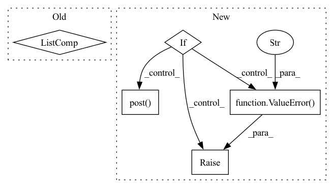

Pattern ID :33835
Before Change
output = model.generate(input_ids=encoded_input, num_return_sequences=1)
if is_list:
return [tokenizer.decode(tokens, skip_special_tokens=True) for tokens in output]
else:
return tokenizer.decode(output[0], skip_special_tokens=True)
else:
raise ValueError("Non-local inference is not currently implemented")After Change
return model_generate(model, tokenizer, device, input_text, **kwargs)
else:
if api_key is None:
raise ValueError(
"Please provide your api_key (https://kiri.ai) with api_key=... or set local=True" )
if model_name == None:
model_name = "gpt2-large"
body = {
"text": input_text,
"model": model_name
}
body = {**body, **kwargs}
res = requests.post( "https://api.kiri.ai/generation", json=body,
headers={"x-api-key": api_key}) .json()
return res["output"]
In pattern: SUPERPATTERN
Frequency: 4
Non-data size: 5
Instances Fragment ID: 97069614
Project Name: backprop-ai/backprop
Commit Name: 300da0a21087ca27863518a5c2056c2d4b5791cd
Time: 2021-01-20
Author: ojasaarkristo@gmail.com
File Name: kiri/models/generation.py
M Class Name: AnonimousClass
N Class Name: AnonimousClass
M Method Name: generate(6)
N Method Name: generate(5)
M Parent Class:
N Parent Class:
M File Name: kiri/models/generation.py
N File Name: kiri/models/generation.py
M Start Line: 10
M End Line: 51
N Start Line: 78
N End Line: 133
Before Change
if os.environ.get("SCRIBE_INTERN"):
return self._upload_intern(messages)
logs = json.dumps(
[
{
"category": self.category,
"message": json.dumps(message),
"line_escape": False,
}
for message in messages
]
)
res = send_to_scribe(logs)
print(res)
After Change
if os.environ.get("SCRIBE_INTERN"):
return self._upload_intern(messages)
access_token = os.environ.get("SCRIBE_GRAPHQL_ACCESS_TOKEN")
if not access_token:
raise ValueError("Can"t find access token from environment variable" )
url = "https://graph.facebook.com/scribe_logs"
r = requests.post(
url,
data={
"access_token": access_token,
"logs": json.dumps(
[
{
"category": self.category,
"message": json.dumps(message),
"line_escape": False,
}
for message in messages
]
),
},
)
print(r.text)
r.raise_for_status()
class PytorchBenchmarkUploader(ScribeUploader): Fragment ID: 97069619
Project Name: pytorch/pytorch
Commit Name: ac5a40e068b0a1ce3c873ef1f681564376dbae52
Time: 2021-07-19
Author: zhouzhuojie@gmail.com
File Name: benchmarks/upload_scribe.py
M Class Name: ScribeUploader
N Class Name: ScribeUploader
M Method Name: upload(2)
N Method Name: upload(2)
M Parent Class:
N Parent Class:
M File Name: benchmarks/upload_scribe.py
N File Name: benchmarks/upload_scribe.py
M Start Line: 46
M End Line: 57
N Start Line: 47
N End Line: 68
Before Change
if os.environ.get("SCRIBE_INTERN"):
return self._upload_intern(messages)
logs = json.dumps(
[
{
"category": self.category,
"message": json.dumps(message),
"line_escape": False,
}
for message in messages
]
)
res = send_to_scribe(logs)
print(res)
After Change
if os.environ.get("SCRIBE_INTERN"):
return self._upload_intern(messages)
access_token = os.environ.get("SCRIBE_GRAPHQL_ACCESS_TOKEN")
if not access_token:
raise ValueError("Can"t find access token from environment variable" )
url = "https://graph.facebook.com/scribe_logs"
r = requests.post(
url,
data={
"access_token": access_token,
"logs": json.dumps(
[
{
"category": self.category,
"message": json.dumps(message),
"line_escape": False,
}
for message in messages
]
),
},
)
print(r.text)
r.raise_for_status()
class PytorchBenchmarkUploader(ScribeUploader): Fragment ID: 97069618
Project Name: pytorch/pytorch
Commit Name: 3624d758648c3df0fb86eb71fdde648dba8cbe5e
Time: 2021-07-16
Author: jw3468@fb.com
File Name: benchmarks/upload_scribe.py
M Class Name: ScribeUploader
N Class Name: ScribeUploader
M Method Name: upload(2)
N Method Name: upload(2)
M Parent Class:
N Parent Class:
M File Name: benchmarks/upload_scribe.py
N File Name: benchmarks/upload_scribe.py
M Start Line: 46
M End Line: 57
N Start Line: 47
N End Line: 68